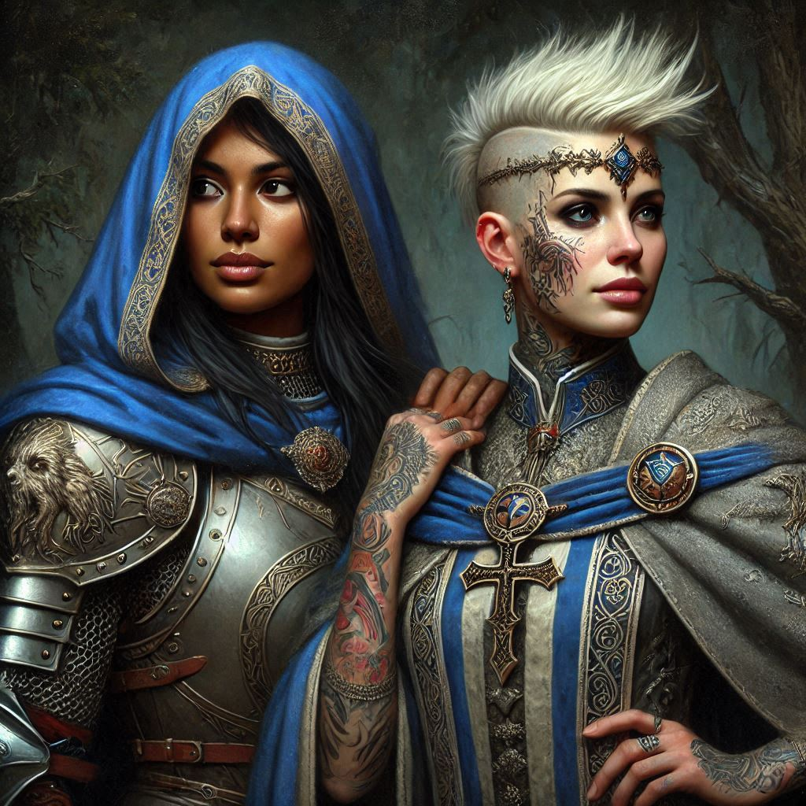
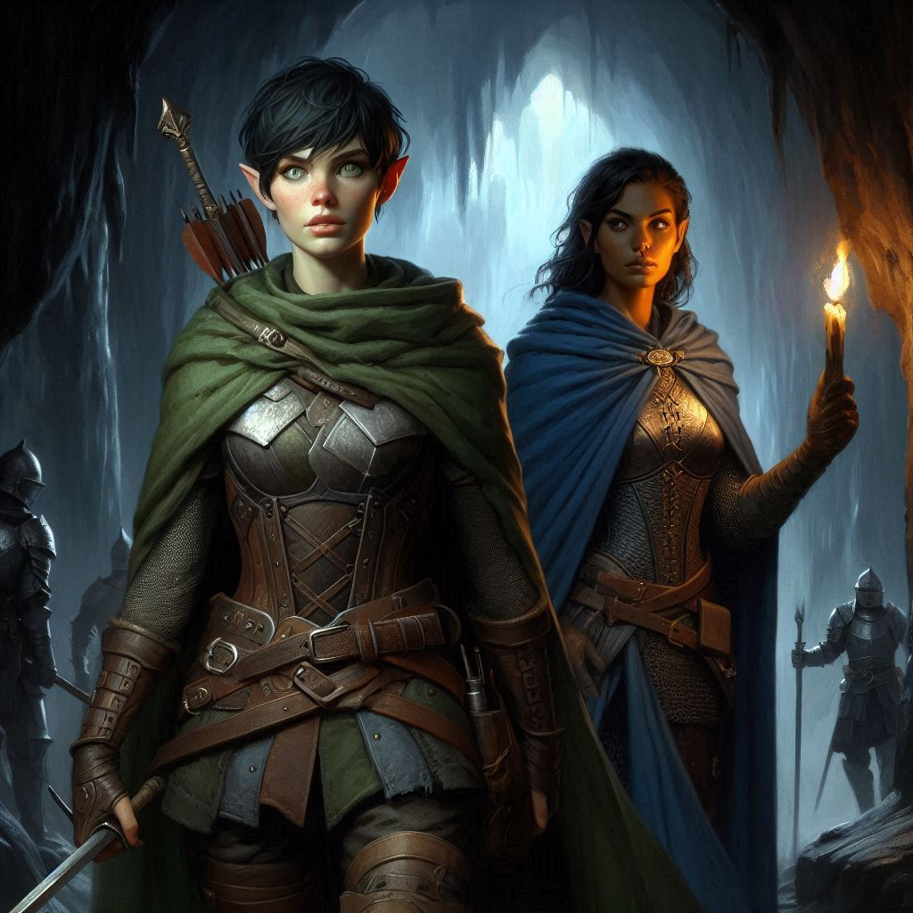
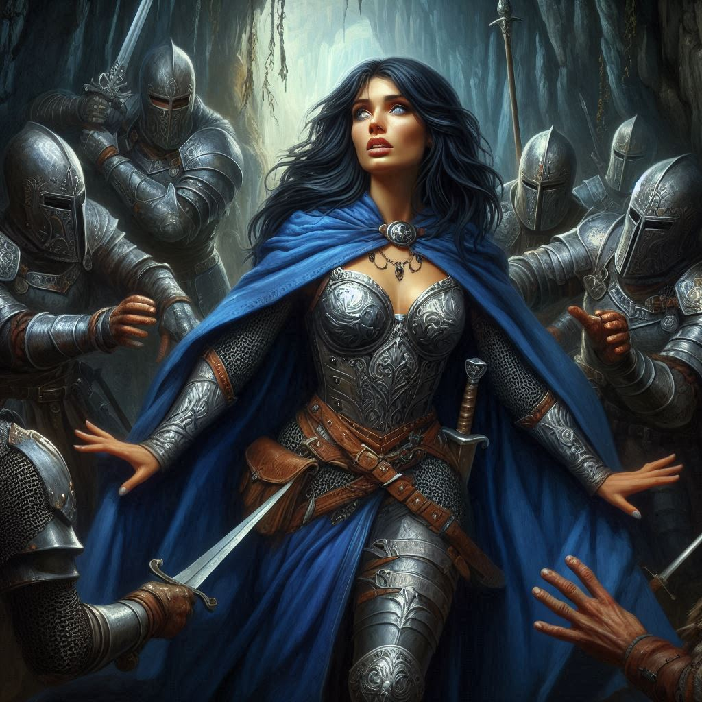

Ambush at Hemlock
You race through the dense forest, your breath coming in quick bursts as the towering pines blur around you. Baider, his heavy boots pounding the earth, keeps pace beside you, and Elias follows close behind, his hand never straying far from the hilt of his sword. The urgency beats in your chest, pushing you faster. You must reach Hemlock Caverns before Jorsh or Varis’s mercenaries do. The rune stone you carry hums with a faint warmth in your pocket, its ancient magic vibrating through your bones—a key to the Realm of Shadows, where Varis is preparing to unleash horrors upon Yew.
The path ahead is treacherous. Twisting roots snake up from the ground, threatening to trip you, and the air grows colder the closer you get to the caverns. The memory of Onyx’s destroyed cottage flashes in your mind—his life’s work reduced to ash by Varis’s minions, a warning of what’s to come if you fail. But there’s no time for hesitation. You press on, driven by your promise to stop Varis, to bring Jorsh to justice, and to save Belladonna.
Baider grunts beside you, his axe slung across his back. “We’re close,” he mutters, his deep voice cutting through the silence. His keen half-orc senses have always been more reliable than any map, and you know you can trust him.
As you crest a small ridge, the yawning mouth of Hemlock Caverns looms before you, dark and foreboding. Shadows dance at the entrance, as if the darkness itself is alive. The sight sends a shiver down your spine, but you square your shoulders, determined. You are Kira Coldspring, Ranger of Yew, and you will not falter.
“We’ll make camp here,” you say, signaling Baider and Elias to a small clearing just outside the cavern entrance. “No sense walking in blind. We wait for nightfall.”
As you kneel to inspect the rune stone once more, a rustle of leaves draws your attention. You whip around, hand on the hilt of your dagger, just in time to see two figures step into the clearing. A tall, armored warrior with a fierce gaze and a shorter, cloaked sorceress. For a moment, you tense, ready for battle. Then the warrior speaks.
“I am no enemy,” the warrior says, her voice calm but commanding. “I am Hawthorn.”
The name strikes you. Princess Hawthorn, heir to the Kingdom of Yew. You’d heard of her—stubborn, headstrong, and desperate to escape the tightening grip of Varis’s blackmail. But to see her here, dressed not in royal finery but battle-worn armor, tells you this is not some political ploy. She’s as much a part of this mission as you are.
“I’ve come to stop Varis,” she continues, and her eyes flick toward the sorceress at her side. “This is Liora, my advisor and companion. We seek the portal to the Realm of Shadows.”
You meet her gaze, wary but intrigued. If Hawthorn and her sorceress are after the same portal, they might be useful allies—or dangerous competition. Baider, ever cautious, steps forward, eyeing Hawthorn with suspicion.
“A high stakes gambit, for a princess,” you say, eyeing her cautiously.
“Are you a loyal subject to the crown of Yew, ranger?” Hawthorn asks.
“I serve the magistrate of Belladonna, and he serves the crown. So yes, I suppose I am loyal to the crown,” you reply, your eyes flickering toward the sorceress. “Even if the crown has not always been loyal to Belladonna.”
“Political relationships can be complicated,” Hawthorn asserts. “But I assure you, the insidious plans of the Minister of Trade have recently been brought to the light, and I am committed to stopping his evil plot. Will you join me?”
“How do we know you’re not leading us into a trap?” Baider growls, his large hands flexing near the handle of his axe.
Hawthorn tilts her chin upward. “Because we don’t have time for games. Varis’s mercenaries are already on their way here. We need to work together if we’re to stop him.”
You glance at Elias, who gives a subtle nod, and then back to Hawthorn. She’s right. Time is slipping away. You can’t afford to fight on two fronts.
“All right,” you say, sheathing your dagger. “But no tricks. We move as one, or not at all.”
With a silent agreement, your new group sets off toward the cavern’s mouth. The air inside is thick and damp, the smell of moss and rot heavy in your nostrils. Liora mutters a few words under her breath, and a faint glow emanates from her fingertips, casting a dim light that illuminates the jagged walls.
As you descend deeper into the caverns, the temperature drops, and the atmosphere grows oppressive. You sense the magic thickening around you, pulling you toward something dark and ancient. The rune stone grows warmer in your pocket, guiding you forward. You grip it tightly, knowing it’s your only hope of navigating the coming dangers.
Suddenly, a sound echoes through the caverns—a metallic clink, followed by the murmur of voices. You raise your hand, signaling the others to stop. From the shadows, a group of heavily armed men steps into the light, their faces obscured by the flickering torch they carry.
“Trade mercenaries,” Baider whispers.
You count at least ten of them, maybe more hiding in the darkness. Hawthorn’s face pales, and her grip on her sword tightens. You can see the fear creeping into her eyes. She glances toward you, silently begging for a way out. But before you can act, one of the mercenaries steps forward, a cruel smile twisting his lips.
“Well, well,” he sneers, “what have we here? A princess, a sorceress, and some stray dogs. You’ve walked right into our trap.”
You grit your teeth, hand on your weapon, ready to make your move. But before you can speak, Hawthorn’s voice rings out, louder than you expect.
“We surrender!” she cries, her sword clattering to the ground.
You freeze, your heart lurching in your chest. Surrender? After everything, she’s giving up?
Baider curses under his breath, and Elias looks to you, his eyes wide with disbelief. Liora, too, seems caught off guard, her glowing hands faltering.
The mercenaries laugh, circling in closer, their confidence growing. The cavern feels smaller, tighter, the shadows pressing in on all sides. But there’s no time to argue. The decision has been made.
You lock eyes with Hawthorn, her face pale and desperate. In this moment, you realize that surrendering was her only option in the face of overwhelming odds—but you’re not so easily defeated. You’ll find a way out of this. You always do.
“What do you think you’re doing?” you hiss under your breath at the princess.
“There are too many of them,” Hawthorn gulps. “We surrender for now. My royal guard have orders to join us soon. Once they’re here, we can overpower these traitors to the crown.”
For now, you raise your hands in mock compliance, but your mind is already racing, formulating your next move.